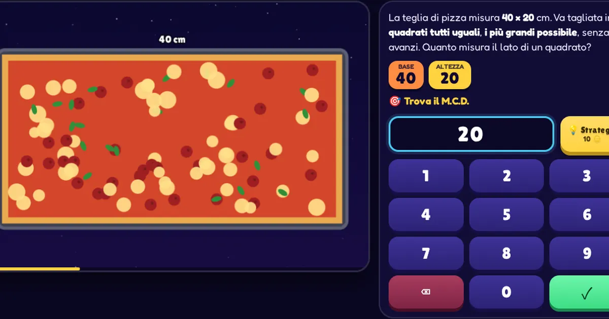

Orfini Math Lab · scheda dell'attività
Arcade Challenge: MCM & MCD
Arcade Challenge: gioco arcade a sfida per allenare m.c.m., M.C.D. e scomposizione in fattori primi: sincronie spaziali, teglie da tagliare, casi da detective e Factor Blaster.

Temi
- Aritmetica
- Divisibilità
- Fattori primi
- Mcd
- Mcm
Competenze (Riforma 2017)
- CIT_4 Competenza digitale
- CIT_5 Imparare a imparare
- MAT_A1 Eseguire calcoli operando con diversi insiemi numerici
- MAT_C2 Utilizzare strategie del pensiero razionale per affrontare situazioni problematiche in contesti reali
- MAT_K1 Insiemi numerici e calcolo letterale
Allenati
Su federicodb.github.io/allenamento:
- Frazioni
- Dividi e sposta
Per prepararti alla verifica
- Nella missione Detective, prima di calcolare, sottolinea la domanda: "di nuovo insieme" e "ogni quanto si ripete" chiedono il mcm; "il più grande possibile" e "in parti uguali senza avanzi" chiedono il MCD.
- Da sapere: scomporre in fattori primi, poi MCD = fattori comuni con l'esponente più piccolo, mcm = tutti i fattori con l'esponente più grande.
- Attenzione: il mcm non è mai più piccolo del numero più grande; il MCD non è mai più grande del più piccolo. È un controllo veloce sul risultato.
Prova tu. Calcola $\\text{MCD}(12, 18)$ e $\\text{mcm}(12, 18)$.
Appunti
Soluzione. $12 = 2^2 \\cdot 3$ e $18 = 2 \\cdot 3^2$. $\\text{MCD} = 2 \\cdot 3 = 6$, $\\text{mcm} = 2^2 \\cdot 3^2 = 36$. Controllo: $6 \\cdot 36 = 216 = 12 \\cdot 18$.